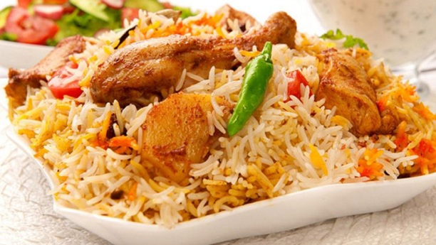

Biryani

Description
Biryani is a traditional dish in south asia which is bursting with spcices and flavor. It is a dish used to celebrate joyous times and good news. It is not a lengthy recipe but requires subtle care and expertise in preparing it. -----
Biryani can be prepared in different ways. There are chicken, beef, vegetarian and even fish options. A very important ingredient for BIryani is saffron, which is also very expensive. The dish can however, be prepeared without saffron as well.
Ingredients
- Yogurt
- Garlic Paste
- Biryani Masala
- Salt
- Turmeric
- Red Chili Powder
- Lemon Juice
- Chicken/Beef/Fish
- Basmati Rice
- Onions
STEPS
- Marinate your chicken with the collected spices and herbs in a big bowl
- Let your chicken marinate for however long you wish but at least more than 2 hours
- Rinse and drain your basmati rice, it is optional to add saffron to the rice after it is dried
- While the rice is sitting and the chicken is marinating prepare a pot with oil and similar spices, bring to a low simmer
- Add onions into the pot and continue simmering
- Add the chicken to the pot while it is simmering, cover the pot and let it sit
- Add yogurt and some more spices based on your preference, mix everything together well
- Add 3 cups of water and then your rice
- Let the rice and chicken cook for a short period of time with the lid on
- After some time, lift the lid and mix everything, at this point its ready to serve!